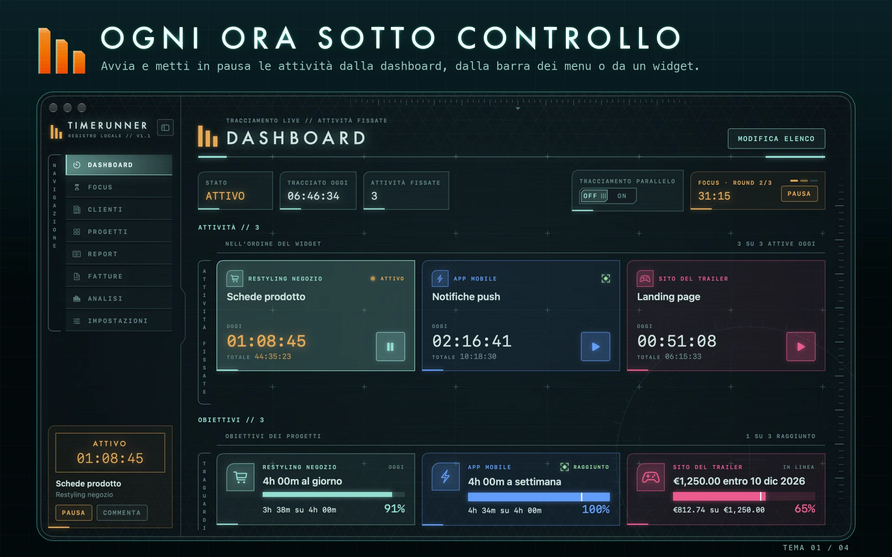
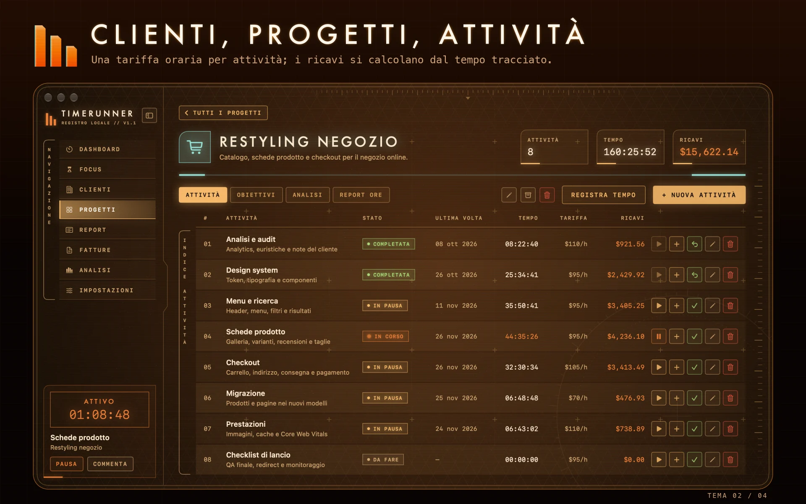
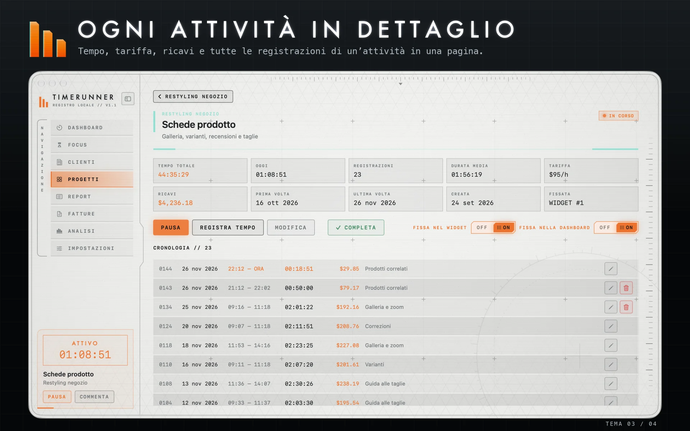
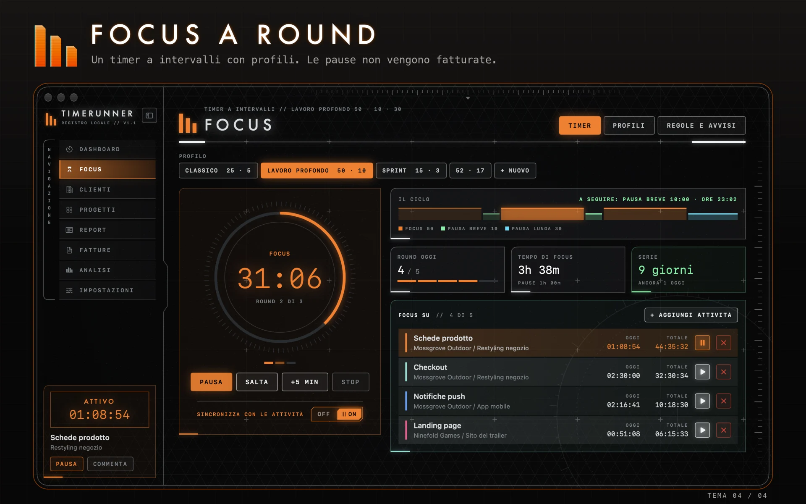
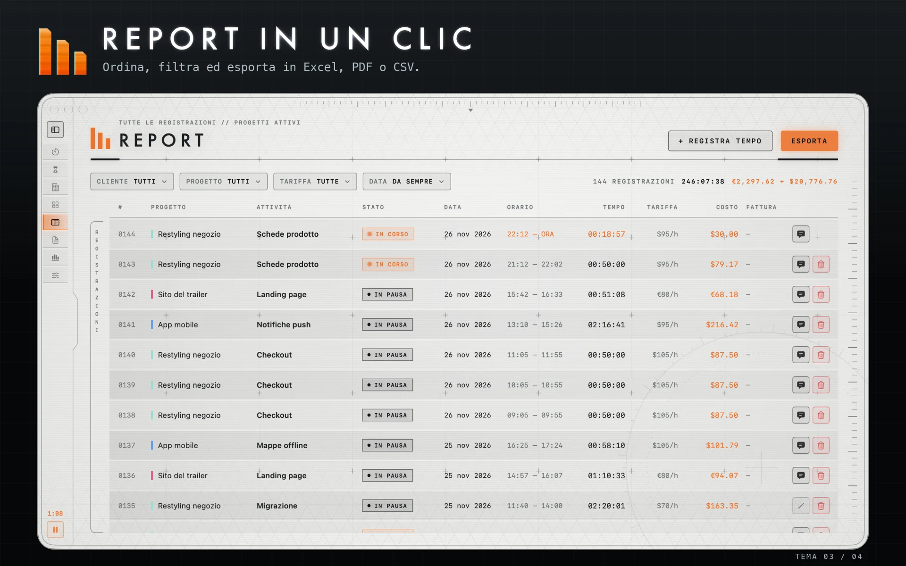
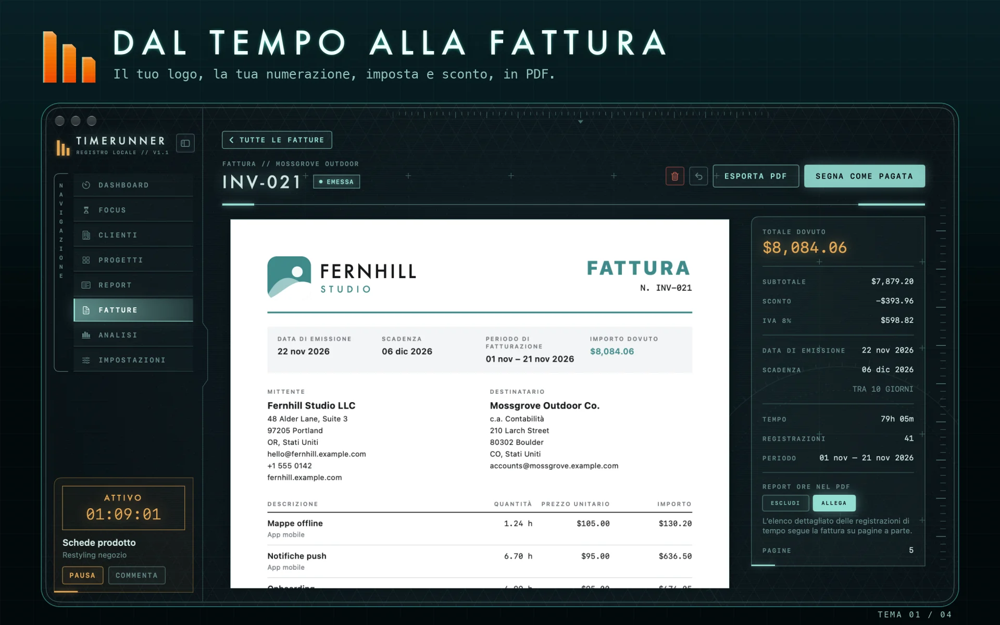
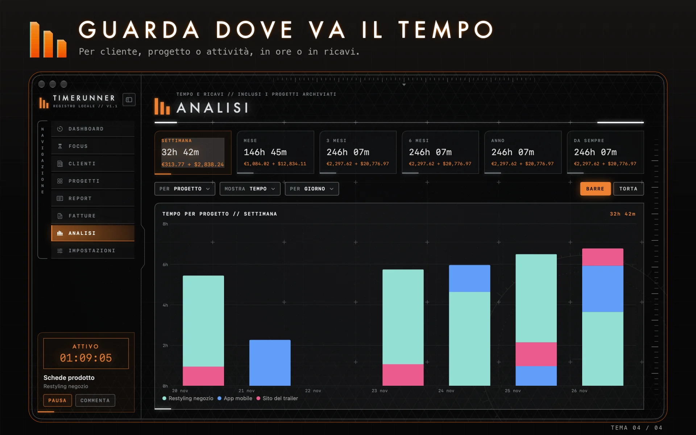
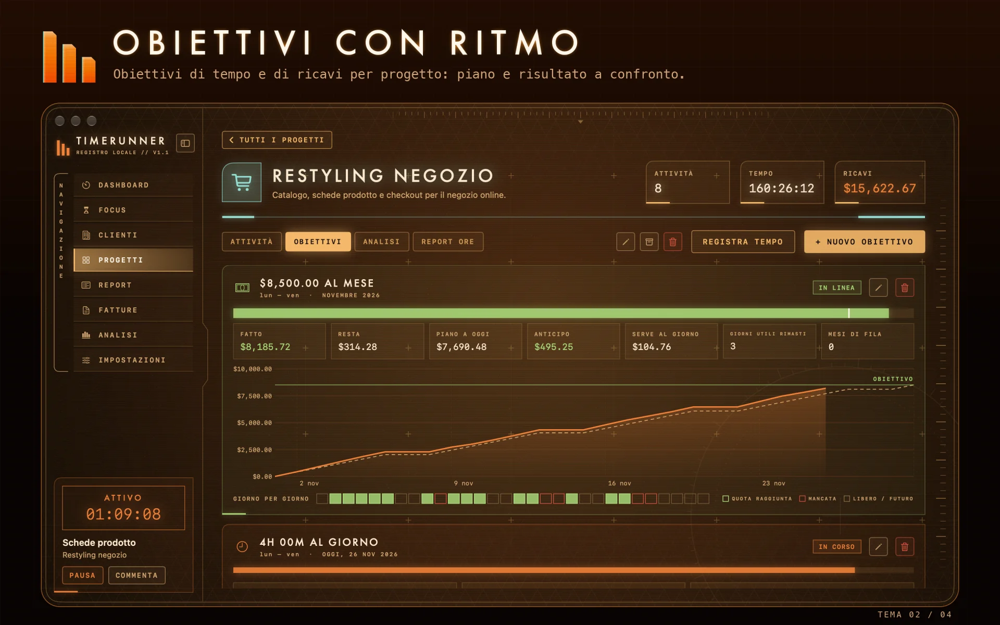
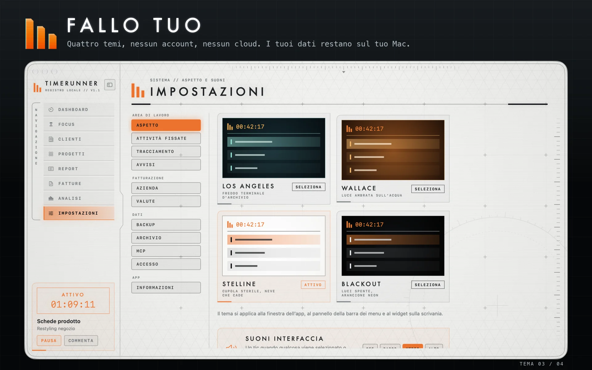
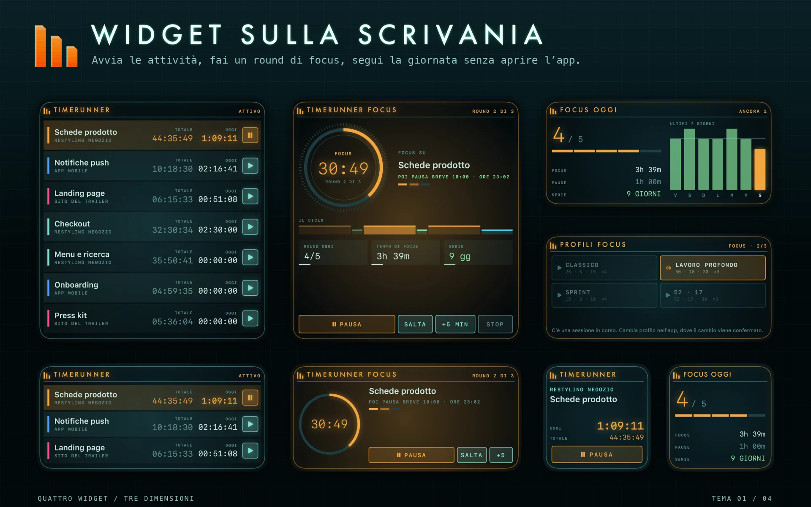

Il tempo, tracciato
come lo fatturi
Il monitoraggio ore del futuro: timer, focus Pomodoro, guadagni in tempo reale e fatture PDF in una console al neon per il Mac. Privato. Bellissimo. Un mese gratis.


- Clienti → progetti → attività → registrazioni di tempo, con tariffa e valuta per attività
- Un timer alla volta, oppure più timer in parallelo

- Registra il tempo che hai dimenticato di tracciare, con giorno, durata e commento
- Stati: Da fare, In corso, In pausa, Completata

- Un timer a intervalli in stile Pomodoro: round di focus, pause brevi e una lunga dopo l’ultimo
- Profili: 25·5, 50·10, 15·3, 52·17 e i tuoi
- Può avviare il timer di un’attività e metterlo in pausa durante le pause, così il riposo non viene fatturato
- Suoni, notifiche, un avviso prima della fine, una schermata di pausa
- Un elenco di attività per il Focus: le sessioni seguono solo le attività che ci metti

- Una tabella ordinabile di tutte le registrazioni, con filtri per cliente, progetto, tariffa e data
- Esporta in una cartella di lavoro Excel (.xlsx), in PDF o in CSV

- Fatture PDF dal tempo non fatturato di un cliente: tutto o un periodo, una riga per attività, progetto o registrazione
- Il tuo logo, il tuo colore, dati di pagamento, numerazione, imposta e sconto
- Bozza → Emessa → Pagata, con il ritardo calcolato dalla data di scadenza
- Il tempo di una fattura emessa non viene mai fatturato due volte

- Totali della settimana, del mese, del trimestre, dell’anno o di sempre: per cliente, progetto o attività, in ore o in ricavi

- Obiettivi di tempo o di denaro per progetto: al giorno, alla settimana o al mese, oppure entro una data
- Avanzamento, ritmo, un grafico piano / risultato e un segno per ogni giorno

- Quattro temi, dal neon verde acqua al nero essenziale
- Le sezioni che non usi si possono nascondere
- La finestra si riduce in un angolo dello schermo e resta utile
- In nove lingue: inglese, spagnolo, francese, tedesco, italiano, polacco, bielorusso, giapponese e coreano

- Un clic per avviare o mettere in pausa: nell’app, nella barra dei menu, sulla scrivania
- Tre widget: il timer, la tua giornata, i tuoi profili
- Fissa un’attività nella dashboard e nel widget della scrivania separatamente
- Nessun account, nessuna analisi, nessuna pubblicità: niente di ciò che inserisci lascia il tuo Mac
- Backup giornalieri automatici sul tuo Mac e in una cartella che scegli tu
- Blocco opzionale con Touch ID
- Qualsiasi valuta nazionale e le dieci maggiori criptovalute
- Un connettore MCP integrato collega TimeRunner a Claude, ChatGPT, Codex, Cursor, VS Code e agli altri strumenti di IA sul tuo Mac
- Chiedilo con parole tue — «avvia il timer di Design», «registra due ore per Acme ieri», «chiudi questa attività» — e il tuo assistente lo fa in TimeRunner
- Può creare clienti, progetti e attività, avviare e fermare i timer, registrare tempo, chiudere attività e archiviare progetti
- Chiedi un report: ore e ricavi per cliente, progetto o attività, per giorno, settimana o mese; fatture, pagamenti ricevuti e importi da incassare
- Disattivato finché non lo attivi, in sola lettura se preferisci, e tramite il connettore non si può mai eliminare nulla
UN MESE GRATIS, POI SCEGLI TU
TimeRunner si scarica gratis e per il primo mese è tutto gratuito. Dopo:
Paghi ogni mese
Paghi ogni anno, oppure in 12 rate mensili dove l’App Store le offre
Un solo pagamento, niente da rinnovare
Senza un piano TimeRunner diventa di sola lettura: le tue registrazioni restano sul tuo Mac e si possono ancora aprire, esportare e salvare in un backup.
L’abbonamento viene addebitato sul tuo account Apple e si rinnova automaticamente per lo stesso periodo e allo stesso prezzo, a meno che non venga annullato almeno 24 ore prima della fine del periodo. Puoi gestirlo o annullarlo nelle impostazioni del tuo account App Store.
Prezzi negli Stati Uniti. Negli altri paesi l’App Store mostra i propri.